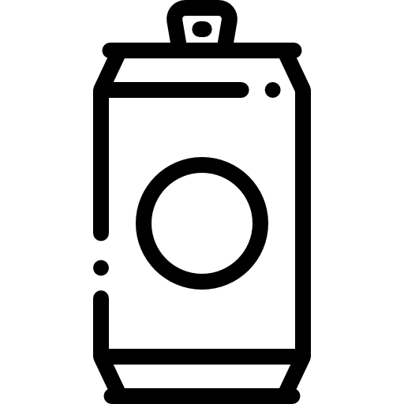

Rubia
Cerveza pura malta
La Andes Origen Rubia es una cerveza para disfrutar, de sabor maltoso, amargo medio, con notas de cereal y levadura.
Está hecha con maltas Pilsen y Munich, una es medio ácida y la otra dulzona, pero ninguna podría vivir sin la otra.
Esta Rubia de dorado brillante y cuerpo medio, brinda aromas variados y acompasados: apenas algo de lúpulo, un poco de cereal, ésteres y levadura. Así que, la recomendación de siempre, tómela en copa de boca cerrada para mantener los aromas por más tiempo.
¡Qué la disfrute!
Alcohol
51 %Amargo
16 IBUColor
13 EBC
Escuela cervecera: Americana.
Ingredientes: Agua, Malta de Cebada, Lúpulo
Maltas: Pilsen (argentina) y Munich
Lúpulos: Cascade (argentina), Zeus (EEUU)
Levadura: Lager
Porrón
340cc- 
Lata
473cc Botella
1l